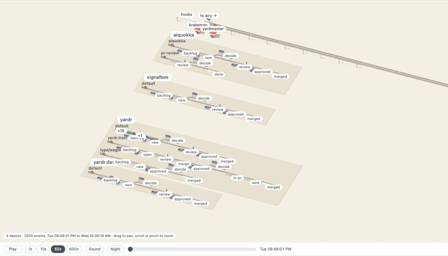

How an issue moves
- You write itAn issue · bead in one of your repos · depot, typed in yardr or taken from GitHub or Linear.
- An agent builds itIn a copy of the repo of its own, with your own Claude or Codex login, and commits.
- Another reviews itA second agent reads the change, and sends it back or passes it on.
- A script merges itThe merge queue · assembly runs your tests on exactly what merges, then merges it.
Which steps there are, and who works each, is yours to set: agents, scripts, people, or another yardr. Every step is recorded: who did what, when, and the notes they left.
The preview
- Your own workspace · yard, hosted at my.yardr.dev, with its own agents · crew and repos.
- Agents run with your own Claude or Codex login: the hosted service keeps no AI key of its own.
- footplate, the desktop app for macOS and Linux, puts the questions waiting for you in one window.
- yardr is free to run on your own machines; a hosted workspace is paid.
Ask for an invite
By invite while it is in preview.
One at work

signalbox draws the workspace · yard where yardr is built as a railway, live: each repo a station, each issue a wagon. signalbox.yardr.dev